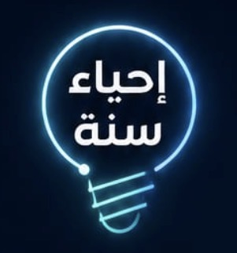

نفهمها 🤍 ثم نعيشها 🌱
رحلة تربوية تفاعلية | 40 يومًا لنعيش السنة لا لنحفظها
كل يوم يحتوي على: الحديث، المعنى، ٣ فوائد، تطبيق عملي، مهمة ٥ دقائق، وسؤال تأمل.
بدل التوثيق اليومي، يوجد في هذه الرحلة 5 توثيقات فقط: توثيق واحد بعد نهاية كل حقيبة من الحقائب الخمس. يفتح كل توثيق بعد إكمال 8 أيام من الحقيبة.
تُفتح الشهادة بعد إكمال 40/40 يومًا. للتجربة قبل النشر استخدمي زر عرض شهادة سفير إحياء السنة.
1️⃣ هندسة القلب والسكينة الداخلية
2️⃣ السيكولوجيا النبوية وإدارة الذات
3️⃣ فقه العلاقات والتعاملات الاجتماعية
4️⃣ فقه التحصين النبوي اليومي
5️⃣ القيادة النبوية وفقه الأزمات